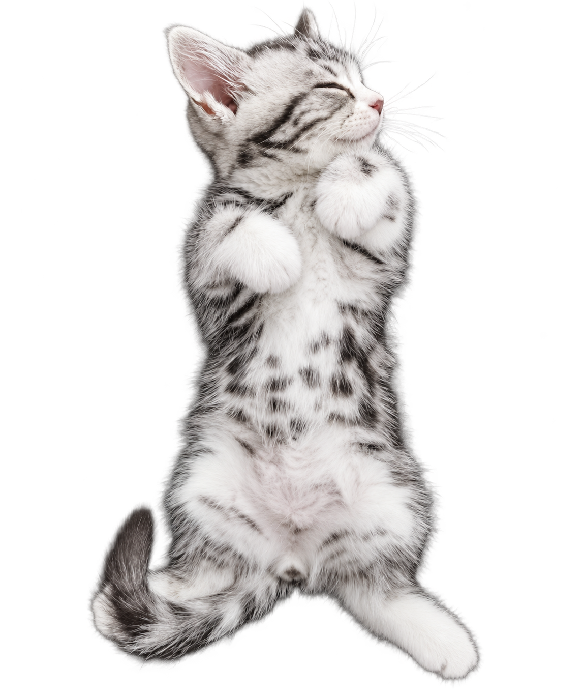
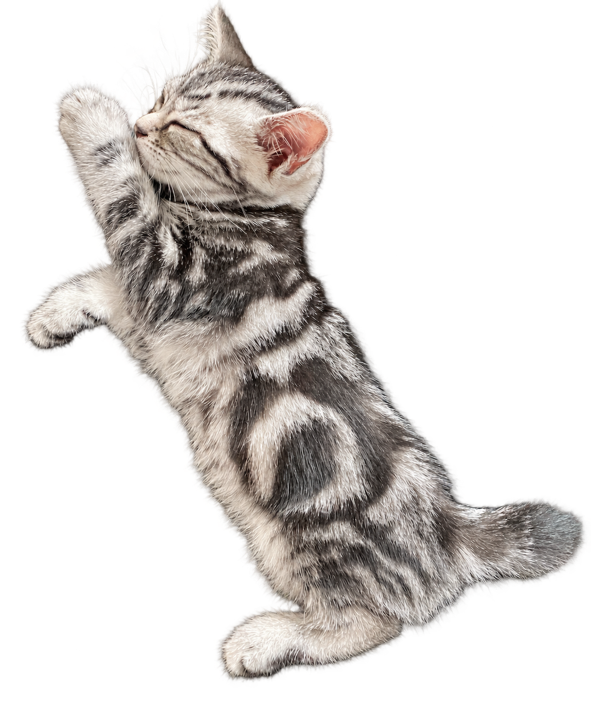
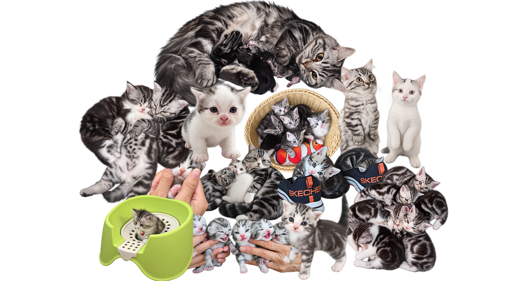
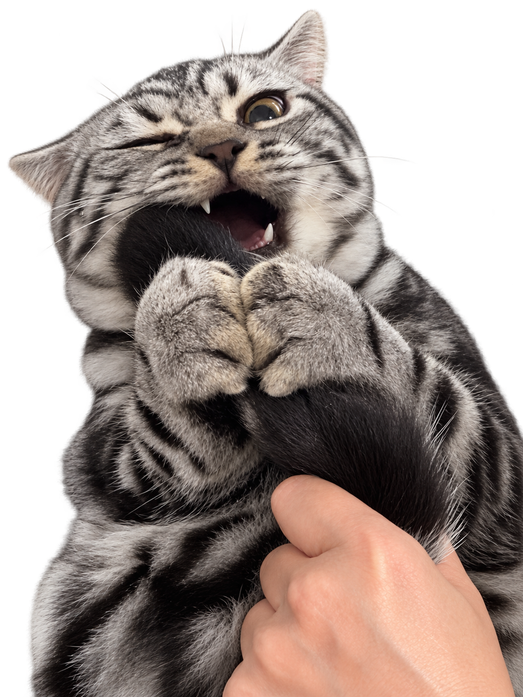
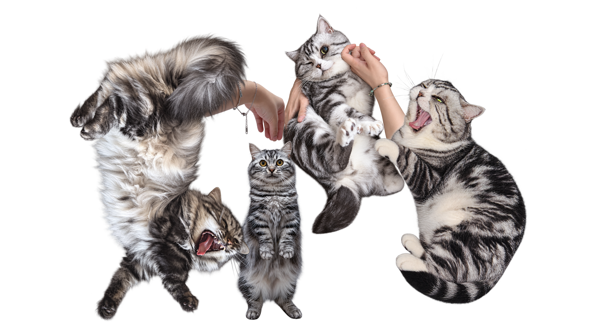
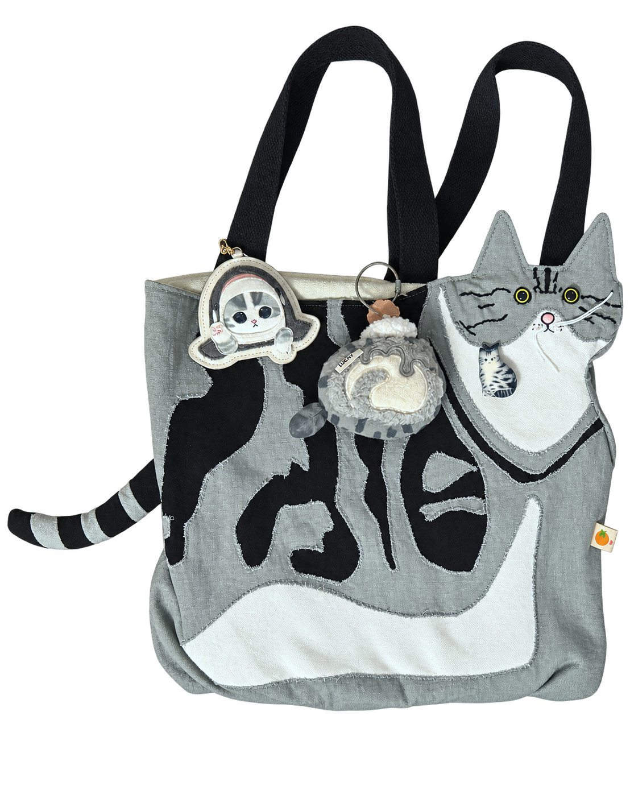
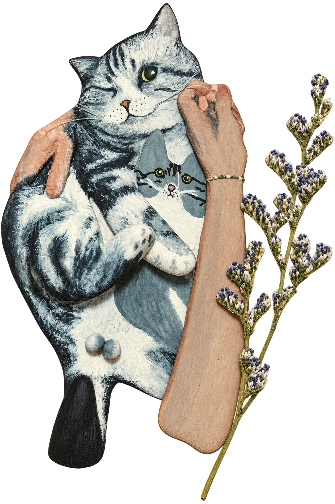

It Started With Two Cats
Two little American Shorthairs came into my life
as birthday gifts in 2020.
Their names were 口水兜 (Drool)
and 吉利丁 (Lucky).

口水兜 — Drool

吉利丁 — Lucky
And Then There Were More…
Over the years, they had more kittens
than I could accurately count.
Eventually, their children had children of their own.
They grew into a huge family of American Shorthairs,
each with different faces, colors, and markings.
Some went to live with my relatives and friends.
As time passed, I lost track of where they all ended up.

鳌拜 — Oboi

I may not remember where every cat ended up,
but I remember 鳌拜 (Oboi) clearly.
He was one of the cats closest to me.
When he passed away, the house felt quieter,
and I missed him more than I knew how to say.
The Family Today
口水兜 is still with us today.
He now lives with his granddaughter, 滚滚 (Rolling),
who is also technically his wife.
The feline family tree is better left unexplained.

A Little Piece of Home
I have also made small crafts inspired by him.
They came with me to the United States,
so even when we are on opposite sides of the world,
it still feels like he is nearby.


↩ put toy back